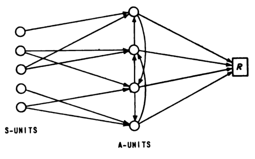

What this essay is about
This essay is written as a companion piece of a lecture on the history of neural networks. It is not exactly an essay, but more of an extended scrapbook of quotations. The lecture slides are here.
Prehistory
The thunderbolt steers all things. [τὰ δὲ πάντα οἰακίζει κεραυνός]
— Heraclitus
Santiago Ramón y Cajal
Cajal’s neural network diagrams are always feedforward. Cajal never depicted feedback except once, in a diagram of a connection in the cerebellum. In fact, according to de No, who was a student of Cajal, Cajal was vehemently against feedbacks. More on this later.
The original caption:
Voie courte des cellules de Golgi.
Fig. 103. — Schéma destiné à montrer la marche du courant apporté par les fibres moussues et la part que prennent à ce courant les cellules de Golgi.
A, fibres moussues ; — B, cylindre-axe de Purkinje ; — n, grains ; — b, fibres parallèles; — c, cellule de Golgi ; — d, cellule de Purkinje vue de champ.
Translation:
Short pathway of the Golgi cells.
Fig. 103. — Diagram intended to show the course of the current brought by the mossy fibers and the part played by the Golgi cells in this current.
A, mossy fibers; — B, Purkinje axis-cylinder; — n, grains; — b, parallel fibers; — c, Golgi cell; — d, Purkinje cell seen from the field.
Rafael Lorente de Nó
The vestibulo-ocular reflex (VOR) is a reflex that acts to stabilize gaze during head movement.
Lorente de No discovered recurrent circuits in the brain, mainly in the VOR, but also in the cortex (Larriva-Sahd 2014).


Lorente de No actually discovered those during the mid-1920s, but Cajal told him that he shouldn’t publish those, because other neuroscientists would think it is crazy, damaging de No’s career. So he published in 1934, immediately after Cajal died.
It is easier to sweep this complexity under the rug, which I do now by resorting to anecdote. Three years ago in a workshop at Irvine I presented some data on the properties of mitral cells in the olfactory bulb, from which I inferred that they formed a mutually excitatory neural population (i.e., one having positive feedback). I cited this his as confirmation of Ramón y Cajal’s (1909) hypothesis of “avalanche conduction.” in which a weak olfactory stimulus might undergo “amplification” (as we would say now). Rafael Lorente de Nó. in the audience. stated that I was in error, Cajal had in mind feed-forward recruitment of mitral cells and disavowed the notion of feedback. Lorente later recalled (personal communication) that in the mid-1920s he prepared a manuscript on the cytoarchitecture of the cerebral cortex, In which he concluded that feedback relations were a prominent feature. After reading the manuscript. Cajal strongly urged Lorente not to publish it because it would be unacceptable to the scientific community and might blight his career. Out of respect for his mentor. Lorente elected not to publish the material while Cajal lived, when he did publish (Lorente de Nó. 1934), the work established itself as one of the enduring classics in neuroanatomy.
Lorente de No was at the founding of cybernetics, and went to the Macy conferences a lot. He consistently pointed out that recurrent networks exist in the brain and is possibly responsible for transient memory. He had influenced many of the early cyberneticians, including Hebb, McCulloch, and Pitts. (Espinosa-Sanchez, Gomez-Marin, and de Castro 2023)
Donald Hebb
Hebbian learning of synapses, also “reverberation”. In short, if A fired shortly before B fired, then all A-to-B synapses would increase in strength. It is not just “neurons that fire together wire together”, since the neuron before the synapse must fire just before the neuron after the synapse. In modern-day language, it is spike-timing-dependent plasticity.
In Hebb’s theory, the brain is a large neuron network, with long parallel fibers (like long-range undersea cables) connecting small clusters of neurons (“cell assemblies”). The long parallel fibers are hardwired, but the small clusters are formed by Hebbian learning. The cell assemblies are recurrent, allowing long-time reverberations, allowing things like after-image, imagination, sensory integration, and other things that require the brain to assemble some information together and “keep it in mind” for a while, despite the lack of external stimulus. He also wanted to use this theory for explaining pathologies like hallucination, phantom pain, etc.
Let us assume that the persistence or repetition of a reverberatory activity (or “trace”) tends to induce lasting cellular changes that add to its stability. … When an axon of cell A is near enough to excite a cell B and repeatedly or persistently takes part in firing it, some growth process or metabolic change takes place in one or both cells such that A’s efficiency, as one of the cells firing B, is increased.
an indefinite reverberation in the structure might be possible, so long as the background activity in other cells in the same gross region remained the same. It would not of course remain the same for long, especially with changes of visual fixa tion; but such considerations make it possible to conceive of “alternating” reverberation which might frequently last for periods of time as great as half a second or a second.
In proposing the reverberating circuitry, Hebb was influenced by de No (Espinosa-Sanchez, Gomez-Marin, and de Castro 2023)
[The cell assembly theory] certainly looked improbable to its author–me–when it was first conceived [because it makes the ease of perception of common objects the result of a long process of learning]. The problem of perception remained intractable for about five years (1939 to 1944) and as a result I made no progress in my attempt to understand concepts and thought. It seemed obvious that concepts, like images, must derive from perception, and I could think of no mechanism of perception that corresponded to my preconceptions. In fact, by 1944 I had given up trying to solve the problem. What happened then was that I became aware of some recent work of Lorente de No in conjunction with some observations of Hilgard and Marquis (1940) which led me to think about the problem from a different point of view… The essential basis of an alternative view was provided by Lorente de No, who showed that the cortex is throughout its extent largely composed of enormously complex closed or re-entrant paths, rather than linear connections only between more distant points… When an excitation reaches the cortex, instead of having to be transmitted at once to a motor path, or else die out, it may travel round and round in these closed paths and may continue to do so after the original sensory stimulation has ceased.
Hebb DO. 1980. Essay on mind. Hillsdale, NJ: Lawrence Erlbaum
Cybernetics
WWII
War is father of all and king of all; and some he manifested as gods, some as men; some he made slaves, some free. [Πόλεμος πάντων μὲν πατήρ ἐστι πάντων δὲ βασιλεύς, καὶ τοὺς μὲν θεοὺς ἔδειξε τοὺς δὲ ἀνθρώπους, τοὺς μὲν δούλους ἐποίησε τοὺς δὲ ἐλευθέρους.]
— Heraclitus
I have gone a bit overboard with the WWII pictures, but I think war has a high concentration of functionalist beauty. Anything that is optimized to the hilt, like a TSMC fab, or a modern ICBM, is intrinsically beautiful. See Why Do Hipsters Steal Stuff? · Gwern.net
For a good tutorial on the problem of land-based anti-aircraft fire control during WWII, see the 1944 United States Army Air Forces film #TF 1-3389, “Flak”. For another one from the perspective of naval fire control, see the 1953 U.S. Navy training film (MN-6783a) Basic Mechanisms In Fire Control Computers.


{kind=link}


import numpy as np
import matplotlib.pyplot as plt
# Set a seed for reproducibility
np.random.seed(0)
# Parameters for the points
num_points = 400
x_points = np.random.normal(0.5, 0.5, num_points)
y_points = np.exp(x_points) + np.random.normal(0, 0.2, num_points)
# Parameters for the curves
num_curves = 10
x_curves = np.linspace(-1, 2, 100)
r_values = np.random.normal(1, 0.1, num_curves)
k_values = np.random.normal(0, 0.1, num_curves)
# Create the plot
plt.figure(figsize=(8, 6))
# Plot the points
plt.scatter(x_points, y_points, color='white', s=0.5)
# Plot the curves
for i in range(num_curves):
plt.plot(x_curves, np.exp(r_values[i] * x_curves) + k_values[i], color='white', alpha=0.2)
# Set plot limits and background color
plt.xlim(-1, 2)
plt.ylim(0, 4)
gradient = np.zeros((256, 256, 3), dtype=np.uint8)
for i in range(256):
gradient[:, i, :] = (i,i,i)
gradient = (256 - gradient) // 2
plt.imshow(gradient, extent=[-1, 2, 0, 4], aspect='auto', origin='lower')
plt.axis('off')
plt.savefig('war_curve.svg')
plt.show()

Bonus: scaling plot?

The problem of fire control
Wiener treated fire control as a problem of linear regression.


I think it is no coincidence that negative feedback circuit was first discovered by Lorente de No in the VOR, and constructed during WWII in the artificial-VOR. In both cases, the eyes needs to be stabilized cheaply and fast.
Norbert Wiener decided he had to contribute to the war, and since his background was in stochastic process and statistics, he decided to work on aircraft predictor for anti-aircraft fire control. The following quote is from a classified memorandum in 1942. It was connected with sensitive wartime efforts to improve radar communication and became a founding document for cybernetics and information theory.
This book represents an attempt to unite the theory and practice of two fields of work which are of vital importance in the present emergency, and which have a complete natural methodological unity, but which have up to the present drawn their inspiration from two entirely distinct traditions, and which are widely different in their vocabulary and the training of their personnel. These two fields are those of time series in statistics and of communication engineering.
This quote from its introduction shows how Wiener thought of statistical communication theory. Prediction of aircraft trajectory is understood as communication: The past trajectory of the aircraft is a noisy channel that is trying to communicate (despite the best efforts of the pilot) the future trajectory of the aircraft.
Wiener thought of antiaircraft fire as a problem of feedback control. The loss function is the squared distance between the aircraft and the bullet. The aircraft is killed by minimizing the loss function.
The control mechanism is a least-squares predictor. (Yeang 2023)
in order to obtain as complete a mathematical treatment as possible of the over-all control problem, it is necessary to assimilate the different parts of the system to a single basis, either human or mechanical. Since our understanding of the mechanical elements of gun pointing appeared to us to be far ahead of our psychological understanding, we chose to try to find a mechanical analogue of the gun pointer and the airplane pilot.
Commentary
Why did it take 50 years for feedback to appear? I don’t know, but I have some theories.
- Feedback networks are much harder to solve mathematically.
- Feedback threatens the idea of cause-then-effect.
- Reflexes are simpler to study, so neuroscientists thought that the brain is made of nothing but reflexes.
- Behaviorism.
Also, I think this shows that there is progress in theoretical neuroscience.
Freud in the 19th century analogized the brain as a steam engine (thus there is “psychic pressure” that builds up and must be “vented”). In the early 20th century, the brain was often analogized to a telephone system. Later, it was analogized to an artificial neural network. Some commentators have pointed at this, and sneered that, scientists always mistakenly use whatever analogy is fashionable to study what is fundamentally out of their reach.
What this does not note is that telephone networks are feedforward, while neural networks can be feedback. A telephone network does not work if there is feedback (it would be ringing pretty loudly), but some artificial neural networks work precisely because there is feedback.


.jpg){kind=link}
{kind=link}
McCulloch and Pitts (1943)
The paper (McCulloch and Pitts 1943) is the foundational paper for artificial neural networks. Often cited, rarely read. In modern language, the paper considered neural networks with integer weights, integer biases, 0-1 activation functions, and constant time-delays. The constant time-delay means that the neural network operates in clock-ticks, so that the state of a neuron at time \(t\) is decided by the inputs to it at time \(t-1\). This is necessary for two things:
- Formalized Hebbian learning: if A has a potential synapse to B, and A fired at time \(t\), then B fired at time \(t+1\), then the potential synapse becomes a real synapse.
- To make recurrent neural networks work.
They proved the following theorems:
- Any boolean function is implemented by a purely feedforward network (“nets without circles”). Thus, it can be used as the controller in any Turing machine.
first, that every net, if furnished with a tape, scanners connected to afferents, and suitable efferents to perform the necessary motor-operations, can compute only such numbers as can a Turing machine; second, that each of the latter numbers can be computed by such a net…
A recurrent network is equivalent to a Turing machine with a finite tape.
A recurrent network can perform Hebbian learning, even if all its weights and biases remain unchanged.
at any time the neuron fires, and the axonal terminations are simultaneously excited, they become synapses… capable of exciting the neuron… THEOREM VII. Alterable synapses can be replaced by circles.
The proof is as shown below:
The paper had two sources: pathological states where the mind folds back onto itself (tinnitus, hallucination, etc), and healthy states where the mind is influenced by its past (memory).
There is no theory we may hold and no observation we can make that will retain so much as its old defective reference to the facts if the net be altered. Tinnitus, paraesthesias, hallucinations, delusions, confusions and disorientations intervene. Thus empiry confirms that if our nets are undefined, our facts are undefined, and to the “real” we can attribute not so much as one quality or “form”. With determination of the net, the unknowable object of knowledge, the “thing in itself,” ceases to be unknowable. (McCulloch and Pitts 1943)
In 1941 I presented my notions on the flow of information through ranks of neurons to Rashevsky’s seminar in the Committee on Mathematical Biology of the University of Chicago and met Walter Pitts, who then was about seventeen years old. He was working on a mathematical theory of learning and I was much impressed.
He was interested in problems of circularity, how to handle regenerative nervous activity in closed loops. I had had to suppose such loops to account for epileptic activity of surgically isolated brain and even of undercut cortex. Lorente de No had shown their significance in vestibular nystagmus. I wanted them to account for causalgia persisting after amputation of a painful limb and even after section of the spinothalamic tract; I wanted them to account for the early stages of memory and conditioning. I wanted them to account for compulsive behavior, for anxiety and for the effects of shock therapy. These appeared to be processes that once started seemed to run on in various ways. Since there obviously were negative feedbacks within the brain, why not regenerative ones? For two years Walter and I worked on these problems whose solution depended upon modular mathematics of which I knew nothing, but Walter did. We needed a rigorous terminology and Walter had it from Carnap, with whom he had been studying. We, I should say Walter Pitts, finally got it in proper form and we published in 1943, A Logical Calculus of the Ideas Immanent in Nervous Activity. H.D. Landahi immediately joined us in a note applying the logical calculus statistically. The crucial third part of our first article is rigorous but opaque and there is an error in subscript. In substance what it proved via its three theorems is that a net made of threshold devices, formal neurons, can compute those and only those numbers that a Turing machine can compute with a finite tape.
First neural network period (1950–1970)
SNARC
There were some neural networks in the early 1950s before Rosenblatt. See (Nilsson 2009, chap. 4) for a review. The most notable one is Minsky’s SNARC. Details are in Yuxi on the Wired - A Scrapbook of Neural Network Lores and Yuxi on the Wired - The Perceptron Controversy.
Apparently it was a neural network version of Shannon’s robot rat “Theseus”.
SNARC had 40 neurons, but it was lost. The report (Minsky 1952) was lost too. I emailed the Harvard library for a copy, but they did not find it.
His PhD thesis (Minsky 1954) contained lots and lots of neural networks doing all kinds of Turing complete things. No way it would require Perceptrons (1969) to reveal to the world that, surprisingly, single-layered perceptrons can’t do XOR.
Frank Rosenblatt
Started research in 1957 under “Project PARA” (“Perceiving and Recognition Automata”). First published in a report (Rosenblatt 1958), later published in a whole book (1961).
(Nagy 1991) describes some more of Rosenblatt’s works.
Generally, Rosenblatt investigated in two ways: computer simulation (on IBM machines usually) and special hardwares (Perceptron Mark I, Tobermory). After 1965, the computer simulations became much faster than special hardwares. The tragedy of ASIC neuromorphic computing, no doubt…
Interesting results in the book: (More in Yuxi on the Wired - The Backstory of Backpropagation)
Continuous activation functions (section 10), what he called “transmission functions”.
Recurrent network that can perform a kind of selective visual attention (chapter 21) and memorize output sequences (chapter 22)



The most interesting example is the “back-propagating error-correction procedure” network with residual connections and weight decay, pictured in Figure 42.

Its structure is (fixed linear)-(activation)-(residual linear)-activation-linear:
- The first layer is fixed (randomly wired).
- The second layer has both a residual connection and a learned connection. The learned weights increase by Hebbian learning, and the weights decay exponentially. Weight decay is a practical necessity because Hebbian learning only increases weights, never decreasing them.
- The third layer is trained by the perceptron learning rule, as usual.
His last great project was Tobermory (1961–1967), for speech recognition. 4 layers with 12,000 weights (magnetic cores). By the time of its completion, simulation on digital computers had become faster than purpose-built perceptron machines. It occupied an entire room.
Stanford Research Institute
When I first interviewed for a position at SRI in 1961, I was warned by one researcher there against joining research on neural networks. Such research, he claimed, was “premature,” and my involvement in it could damage my reputation.
The weight matrix of the MINOS II pattern recognition system, consisting of a grid of magnetic cores. The magnetization of a core is proportional to its matrix weight. Matrix weights that are quite literally weighty. The weight matrices are swappable.
ADALINE
ADALINE (adaptive linear) and MADALINE (many ADALINE).
The ADALINE is a single perceptron \[ \theta\left(\sum_i w_i x_i + b\right) \]
and its learning rule is gradient descent on squared error \((\sum_i w_i x_i + b - y)^2\).

It used manual input by flipping 16 switches by hand. The first version (“knobby ADALINE”) had weights implemented as rheostats, with knobs turned by hand!!! Later versions used memistors that do gradient descent automatically.

They got up to 1000 weights in a 2-layered MADALINE, but the learning rule was really hacky, and it was a deadend. (Widrow and Lehr 1990) A video of the MADALINE in action is found in The LMS algorithm and ADALINE. Part II - ADALINE and memistor ADALINE - YouTube
More information in Yuxi on the Wired - The Backstory of Backpropagation.
I don’t know where to put this anecdote, but I want you to read about it anyway.
We discovered the inherent ability of adaptive computers to ignore their own defects while we were rushing through construction of a system called MADALINE I for presentation at a technical meeting. The machine was finished late the night before the meeting and the next day we showed some very complex pattern discriminations. Later we discovered that about a fourth of the circuitry was defective. Things were connected backward, there were short circuits, and poor solder joints. We were pretty unhappy until it dawned on us that this system has the ability to adapt around its own internal flaws. The capacity of the system is diminished but it does not fail.
B. Widrow, “Adaline: Smarter than Sweet”, Stanford Today, Autumn 1963.
See more of these amusing stories at Yuxi on the Wired - A Scrapbook of Neural Network Lores.
Neural network winter (1970s)
The XOR myth
The XOR myth can’t be true, for the following reasons:
- It was widely known that binary perceptron networks are Turing-complete. (McCulloch and Pitts 1943) already proved it.
- Minsky wrote his PhD thesis (Minsky 1954) describing all kinds of specific neural networks for computing specific boolean functions.
- MLP was studied as “linear threshold logic” by electric engineers. They wouldn’t have been so interested if they couldn’t even do XOR. (Dertouzos 1965)
Still, the XOR myth has some power. What exactly is it? To explain this mess, I will draw a flowchart.
Let’s follow all the points in the flowchart:
- Can your neural network learn XOR? If you answer “No”, then your neural network is patently useless.
- To learn XOR, the neural network must have at least 2 layers. But how is it made? If you made it manually, then it is not really machine learning, is it?
- If it is learned, then what algorithm?
- The Perceptron learning algorithm only works for featurized linear regression. So where did you get your features? If you designed it manually, by, for example, reading neuroscience papers, then it is not really machine learning, is it? If they are randomly generated, then it will not scale because of combinatorial explosion.
- If you used a hack like the MADALINE learning rule, or whatever Rosenblatt tried, then you have no doubt noticed how fiddly and unscalable they are, and how dependent they are on the hyperparameters. Each particular problem required a particular setting of hyperparameters.
After backprop became prevalent, Minsky and Papert wrote their updated Perceptron (1988) with 43 pages to dunk on everything that is the new connectionism. This allows us to add a few more blocks to the XOR myth flowchart:
- If you use gradient descent, then it would just get stuck in local minima. You can’t just draw a scaling plot and hope it will continue, without proving it theoretically!
- In conclusion, there is no general and scalable learning algorithm.
As an example of the kind of MLP that Minsky approves: a hand-designed deep network (Fukushima 1969). Here is someone who actually tried to understand the problem instead of just tossing it to the computer and expect things to magically work.
Minsky can’t afford a few million neurons:
I had the naïve idea that if one could build a big enough network, with enough memory loops, it might get lucky and acquire the ability to envision things in its head. This became a field of study later. It was called self-organizing random networks. Even today, I still get letters from young students who say, ‘Why are you people trying to program intelligence? Why don’t you try to find a way to build a nervous system that will just spontaneously create it?’ Finally, I decided that either this was a bad idea or it would take thousands or millions of neurons to make it work, and I couldn’t afford to try to build a machine like that.
Possible reasons for the winter
Minsky and Papert’s book. At least, Minsky thought so.
There had been several thousand papers published on Perceptrons up to 1969, but our book put a stop to those. It had, in all modesty, some beautiful mathematics in it–it’s really nineteenth-century mathematics.
Minsky’s early career was like that of Darth Vader. He started out as one of the earliest pioneers in neural networks but was then turned to the dark side of the force (AI) and became the strongest and most effective foe of his original community.
— Robert Hecht-Nielsen (Rosenfeld and Anderson 2000)
Lack of funding
Many people see the book as what killed neural nets, but I really don’t think that’s true. I think that the funding priorities, the fashions in computer science departments, had shifted the emphasis away from neural nets to the more symbolic methods of AI by the time the book came out. — Michael A. Arbib (Rosenfeld and Anderson 2000)
Lack of people
- McCulloch (1969) Pitts (1969) Rosenblatt (1971) died
- Widrow cut his losses and looked for applications for a single neuron, revolutionizing adaptive noise filtering.
- Ted Hoff went to Intel to create microprocessors.
- SRI turned to logical AI. Duda and Hart wrote their classic textbook on “pattern classification” which had little neural networks, and half of the book was devoted to “scene analysis”. (Duda and Hart 1973)
And of course, no backpropagation.
Minsky and Papert against large neural networks
See Yuxi on the Wired - The Perceptron Controversy for details.
30 years of people refusing to use gradient descent
See Yuxi on the Wired - The Backstory of Backpropagation.
Rosenblatt did not even consider gradient descent. (1960s)
Minsky repeatedly shooting down gradient descent. (1960s – 1990s at least)
The story of DARPA and all that is just a myth. The problem is that there were no good ideas. The modern idea of backpropagation could be an old idea… It converges slowly, and it cannot learn anything difficult. Certainly, in 1970 the computers were perhaps too slow and expensive to do it. I know that Werbos thought of that idea. It’s certainly trivial. The idea is how you do gradient descent. I didn’t consider it practical.
Widrow and Hoff could not generalize one-layered gradient descent to two-layered gradient descent and gave up (1960s).
The Madaline had an adaptive first layer and a fixed-logic second layer. What Rosenblatt had was a fixed-logic first layer and an adaptive-logic second layer or output layer. Now, it is easy to adapt on output layer. But it’s very difficult to adapt a hidden layer. … We could adapt an adaptive first layer with a fixed second layer as long as we knew what the second layer was. But we never succeeded in developing an algorithm for adapting both layers, so that the second layer is not fixed and both layers are adaptive. It wasn’t that we didn’t try. I mean we would have given our eye teeth to come up with something like backprop.
Backprop would not work with the kind of neurons that we were using because the neurons we were using all had quantizers that were sharp. In order to make backprop work, you have to have sigmoids; you have to have a smooth nonlinearity … no one knew anything about it at that time. This was long before Paul Werbos. Backprop to me is almost miraculous. (Rosenfeld and Anderson 2000)
The SRI group never worked it out.
During the 1960s, neural net researchers employed various methods for changing a network’s adjustable weights so that the entire network made appropriate output responses to a set of “training” inputs. For example, Frank Rosenblatt at Cornell adjusted weight values in the final layer of what he called the three-layer alpha-perceptron. Bill Ridgway (one of Bernard Widrow’s Stanford students) adjusted weights in the first layer of what he called a MADALINE. We had a similar scheme for adjusting weights in the first layer of the MINOS II and MINOS III neural network machines at SRI. Others used various statistical techniques to set weight values. But what stymied us all was how to change weights in more than one layer of multilayer networks. (I recall Charles Rosen, the leader of our group, sitting in his office with yellow quadrille tablets hand-simulating his ever-inventive schemes for making weight changes; none seemed to work out.)
Paul Werbos spending 10 years (1972–1982) unable to publish backpropagation, and almost starved.
He developed the backprop in 1971 or 1972 for his PhD thesis, as a mathematical version of Freudian psychoanalysis.
The model in Figure 1 is actually just a mathematical version of Freud’s model of psychodynamics, where the derivative of \(R_i\) represents what Freud called the “cathexis” (or affect) or emotional charge or emotional energy attached to the object which \(R_i\) represents. In other words, I came up with backpropagation by not just laughing at Freud’s “nonscientific” model, but by translating it into mathematics and showing that it works. (Werbos 2011)
The PhD committee was unconvinced, so he had to find a supporting advisor.
“But look, the mathematics is straightforward.”
“Yeah, yeah, but you know, we’re not convinced it’s so straightforward. You’ve got to prove some theorems first.”
So he went to Stephen Grossberg…
this stuff you’ve done, it’s already been done before. Or else it’s wrong. I’m not sure which of the two, but I know it’s one of the two.
Then to Marvin Minsky…
Look, everybody knows a neuron is a 1-0 spike generator. That is the official model from the biologists. Now, you and I are not biologists. If you and I come out and say the biologists are wrong, and this thing is not producing 1s and 0s, nobody is going to believe us. It’s totally crazy. I can’t get involved in anything like this.
Unable to find a supporting advisor, he faced the committee again. He decided to simplify his work to just backpropagating through piecewise linear activation functions.
I handed that to my thesis committee. I had really worked hard to write it up. They said, “Look, this will work, but this is too trivial and simple to be worthy of a Harvard Ph.D. thesis.”
So he lost funding, so he lived in the slums and became malnutritioned.
… they had discontinued support because they were not interested… There was a period of three months when I was living there in the slums. To conserve the little bit of money I had, I remember eating soybean soup and chicken neck soup. I remember getting the shakes from inadequate nutrition.
Anyway, he did get his PhD thesis and it did contain the backpropagation algorithm, but then promptly got sucked into a decade of misadventures with federal bureaucracy. The net effect is that he only managed to publish the backprop algorithm in 1982.
Geoffrey Hinton spent several years (1982–1985) refusing to try backpropagation, since he was too invested in the Boltzmann machines.
I first of all explained to him why it wouldn’t work, based on an argument in Rosenblatt’s book, which showed that essentially it was an algorithm that couldn’t break symmetry. … the standard way of doing learning is to have random initial weights, or you could just put a little bit of noise in the learning rule … The next argument I gave him was that it would get stuck in local minima. There was no guarantee you’d find a global optimum. Since you’re bound to get stuck in local minima, it wasn’t really worth investigating.
But it turned out that Boltzmann machines just never worked in practice, and desperate times called for desperate measures (backpropagation). Amazingly, it just worked.
I almost blew it because the first thing I tried it on was an 8-3-8 encoder; that is, you have eight input units, three hidden units, and eight output units. You want to turn on one of the input units and get the same output unit to be on.
In a Boltzmann machine, since the units are binary, the states of the three hidden units have to be the eight different binary codes, so you know what the hidden units will look like when they’ve solved the problem. So I ran backpropagation on this problem and looked at the weights of the hidden units. They didn’t have the right structure of weights. … I thought, “Oh well, it turns out backpropagation’s not that good after all.” Then I looked at the error, and the error was zero. I was amazed.
He still thinks Boltzmann machines are better though!
That was at the stage when we were just completing the PDP books, so we’d already agreed on what was going to be in the books. The final chapters were being edited. We decided we’d just slip in an extra chapter on backpropagation, so it was a late addition to the book. But I was always a bit disappointed. I mean, intellectually, backpropagation wasn’t nearly as satisfying as Boltzmann machines. … it didn’t have the nice probabilistic interpretation.
Some bitter lessons I guess
First attempt
I hate everything that merely instructs me without increasing or directly quickening my activity.
— Goethe, Letter to Friedrich Schiller, 1798-12-19. Quoted in Nietzsche’s On the Use and Abuse of History for Life.
We do need history, but quite differently from the jaded idlers in the garden of knowledge, however grandly they may look down on our rude and unpicturesque requirements. In other words, we need it for life and action, not as a convenient way to avoid life and action, or to excuse a selfish life and a cowardly or base action. We would serve history only so far as it serves life; but to value its study beyond a certain point mutilates and degrades life.
— Nietzsche, On the Use and Abuse of History for Life (1874)
Nihilism: You can draw lessons from history, but everyone else also can draw the opposite ones, so there is no take-home lesson.
Elitism: First-rate minds make history. Second-rate minds study history. Getting history “right” is for second-rate minds: old professors (that’s Schmidhuber) and procrastinating PhD students (that’s me).
Those who don’t know their history, repeat it. Those who know their history, are too busy remembering to make it.
Emotivism: The proper function of history is to fortify your weights and to harden your biases against naysayers, so that you can go forth and make some history.
The function of a mathematician is to do something, to prove new theorems, to add to mathematics, and not to talk about what he or other mathematicians have done. Statesmen despise publicists, painters despise art-critics, and physiologists, physicists, or mathematicians have usually similar feelings: there is no scorn more profound, or on the whole more justifiable, than that of the men who make for the men who explain. Exposition, criticism, appreciation, is work for second-rate minds.
Second attempt
This is where I was going to end, but GPT told me that I must include positive lessons, so I made some up. I fully expect you to ignore my lessons and reinterpret the history I dug up to your lessons.
To facilitate this freedom of reinterpretation, I will write my weights and biases in bold letters, so that it is not a secret agenda:
With this, you can now subtract my latent vector and add yours, in full Word2Vec fashion.
Nihilism
History is useless for doing things, because ideas are cheap and can’t be lost. People will keep reinventing the same ideas until it starts working, then it will not be lost again. The idea is a patient seed, waiting for the soil to moisten.
In particular, it is useless to give correct attribution to “the real inventor” of an idea, because there are so many re-inventors. It is much more interesting to study each re-invention on its own, to find out how they invented. The point is not to respect the dead, but to find out how they did their things, so that we can do more things. It is useless to know who “really” invented backpropagation, but useful to know how each re-inventor managed to invent it in their individual, different contexts of rediscovery.
Those who don’t know their history, repeat it. If everyone knows their history, there will be a replication crisis.
Residual networks were described by Lorente de No, then Rosenblatt. DenseNet (Huang et al. 2018) was already in 1988 (Lang and Witbrock 1988). People didn’t know it, but this did not matter.
The only place where the lack of a good idea really hurt is backpropagation. But even if they had backpropagation, what could they have made in the 1970s? A personal tragedy for Widrow and Rosenblatt. Hardly a tragedy for the study of neural networks itself. Ted Hoff was right to leave neural networks to develop the microprocessor.
Empiricism
Elegant ideas matter little, because there are always opposing elegant ideas. Ideas must be tested by experiments. Benchmarks are the experimentum crucis. In mensuris veritas.
30 years of elegant arguments against backpropagation amounted to nothing but jokes for us.
This disjunction between theory and experiments is particularly acute in reinforcement learning. If you have read RL papers, you would notice how often they describe some elegant ideas and giant formulas, then proceeded to talk about the experiments. I always find the elegant ideas suspicious, and only trust the benchmarks. If the idea is really elegant and stands on its own, why all the ponderous benchmarks? Furthermore, it is often the case that the theory works only in the sense of “eventually almost anywhere if the functional space is large enough”.
Similar comments apply for the PAC-learning literature, the no-free-lunch literature, and the neural network universality literature. It is surely comforting to know that neural networks are universal function approximators, but so are Turing machines. Neural networks work not because they are universal, but because their inductive biases happen to be very attuned to physically interesting problems. Why is that? That… is unclear, but (Lin, Tegmark, and Rolnick 2017) has a guess. Basically, it states that neural networks are particularly good at learning trajectories generated by quadratic Lagrangian mechanical systems.
The idea follows the compute
It is not just that compute allows good ideas to be filtered out, and that testing ideas requires expensive compute. Sometimes compute is necessary to even approach the good idea. Without compute experiments, one would be left to wander the vast space of possible ideas. This is why ablation studies are so important, though it lacks the pedigreed prestige of theory. Ablations need compute, making it a choice for the nouveau riche – the GPU-rich, that is.
Two examples. One is ResNet
For months, they toyed with various ways to add more layers and still get accurate results. After a lot of trial and error, the researchers hit on a system they dubbed “deep residual networks”.
Another is Transformer
There was every possible combination of tricks and modules—which one helps, which doesn’t help. Let’s rip it out. Let’s replace it with this. Why is the model behaving in this counterintuitive way? Oh, it’s because we didn’t remember to do the masking properly. Does it work yet? OK, move on to the next. All of these components of what we now call the transformer were the output of this extremely high-paced, iterative trial and error.
The bitter lesson
By convention sweet is sweet, bitter is bitter, hot is hot, cold is cold, color is color; but in truth there are only atoms and the void. [νόμωι (γάρ φησι) γλυκὺ καὶ νόμωι πικρόν, νόμωι θερμόν, νόμωι ψυχρόν, νόμωι χροιή, ἐτεῆι δὲ ἄτομα καὶ κενόν]
— Democritus, quoted in Sextus Empiricus Against the Mathematicians VII 135. I like the funny title.
A new scientific truth does not triumph by convincing its opponents and making them see the light, but rather because its opponents eventually die and a new generation grows up that is familiar with it …
— Max Planck, Scientific Autobiography (1950), page 33. In simpler terms, “Science progresses one funeral at a time.”.
AI researchers have often tried to build knowledge into their agents,
this always helps in the short term, and is personally satisfying to the researcher, but
in the long run it plateaus and even inhibits further progress, and
breakthrough progress eventually arrives by an opposing approach based on scaling computation by search and learning.
The eventual success is tinged with bitterness, and often incompletely digested, because it is success over a favored, human-centric approach.
The bitter lesson is bitter, because some people really like elegant ideas, and they will not change.
Marvin Minsky insisted for decades that large neural networks do not work in theory (as we saw), so it only appears to work in practice.
13.5 Why Prove Theorems?
Why did you prove all these complicated theorems? Couldn’t you just take a perceptron and see if it can recognize \(\psi_{\text {CONNECTED}}\)?
No. (1969)
I had the naïve idea that if one could build a big enough network, with enough memory loops, it might get lucky and acquire the ability to envision things in its head. This became a field of study later. It was called self-organizing random networks… I decided that either this was a bad idea or it would take thousands or millions of neurons to make it work, and I couldn’t afford to try to build a machine like that. (1981)
If one were to ask whether any particular, homogeneous network could serve as a model for a brain, the answer (we claim) would be, clearly. No. (1988)
In his summary talk at the end of the conference [The AI@50 conference (2006)], Marvin Minsky started out by saying how disappointed he was both by the talks and by where AI was going. He explained why: “You’re not working on the problem of general intelligence. You’re just working on applications.” (2006)
Geoffrey Hinton still liked Boltzmann machines more than backprop, even in 1995:
That was at the stage when we were just completing the PDP books, so we’d already agreed on what was going to be in the books. The final chapters were being edited. We decided we’d just slip in an extra chapter on backpropagation, so it was a late addition to the book. But I was always a bit disappointed. I mean, intellectually, backpropagation wasn’t nearly as satisfying as Boltzmann machines. … it didn’t have the nice probabilistic interpretation.
Noam Chomsky is totally against statistical language modelling, since at least 1969. See also (Norvig 2017).
But it must be recognized that the notion of “probability of a sentence” is an entirely useless one, under any known interpretation of this term. (1969)
It’s true there’s been a lot of work on trying to apply statistical models to various linguistic problems. I think there have been some successes, but a lot of failures. There is a notion of success … which I think is novel in the history of science. It interprets success as approximating unanalyzed data. (2011)
Well, first we should ask the question whether large language models have achieved anything, anything, in this domain? Answer: No! They’ve achieved zero… GPT-4 is coming along, which is supposed to going to have a trillion parameters. It will be exactly the same. It’ll use even more energy and achieve exactly nothing, for the same reasons. So there’s nothing to discuss. (2022)
Machine Learning Street Talk: The Ghost in the Machine and the Limits of Human Understanding
On the last one, I suspect he is still fighting the battle against behaviorism, and the pretrained language models like GPT-4 must seem like a kind of neo-behaviorist heresy to him.
Yehoshua Bar-Hillel, speaking in the 1960s, against machine translation – what he called FAHQT (Fully Automatic High-Quality Translation, or as I imagine him saying it, “Machine translation? Ah, FAHQT.”). In short, he argued that statistical language modelling does not work better than manually programming in the rules. Specifically, the Winograd schema challenge (which was known in the 1960s, before Winograd discussed it) requires general world understanding, which is “utterly chimerical and hardly deserves any further discussion’.
No justification has been given for the implicit belief of the “empiricists” that a grammar satisfactory for MT purposes will be compiled any quicker or more reliably by starting from scratch and “deriving” the rules of grammar from an analysis of a large corpus than by starting from some authoritative grammar and changing it, if necessary, in accordance with analysis of actual texts.
…
Whenever I offered [the Winograd challenge] to one of my colleagues working on MT, their first reaction was: “But why not envisage a system which will put this knowledge at the disposal of the translation machine?” … such a suggestion amounts to, if taken seriously, is the requirement that a translation machine should not only be supplied with a dictionary but also with a universal encyclopedia. This is surely utterly chimerical and hardly deserves any further discussion.
It seems now quite certain to some of us, a small but apparently growing minority, that with all the progress made in hardware (i.e., apparatus), programming techniques and linguistic insight, the quality of fully autonomous mechanical translation, even when restricted to scientific or technological material, will never approach that of qualified human translators and that therefore Machine Translation will only under very exceptional circumstances be able to compete with human translation.
Even Terry Winograd had a tentative guess that the Winograd challenge is too challenging, though it is clearly just a weak guess, not a firm prediction like the previous quotes.
The limitations on the formalization of contextual meaning make it impossible at present – and conceivably forever – to design computer programs that come close to full mimicry of human language understanding.